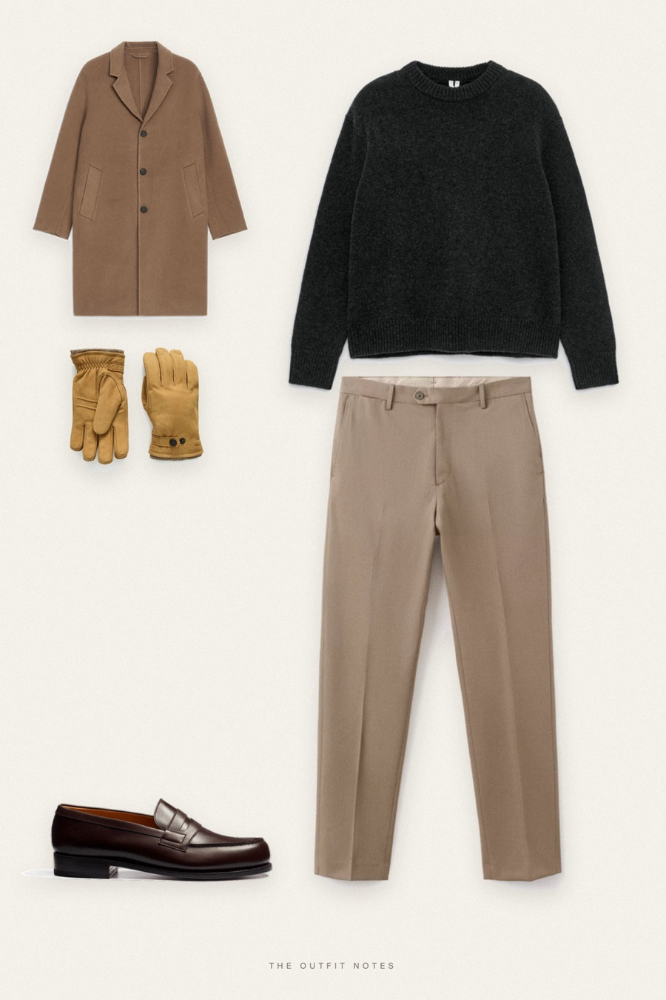

Camel Hours
london in november

Winter outfit for men: a relaxed camel wool topcoat over a charcoal heavy knit jumper, pleated virgin wool trousers in stone beige and J.M. Weston brown loafers. Hestra nubuck gloves finish it. Old money outfit for London streets, and an easy fall to winter formula to save.
The pieces
This page contains affiliate links: if you buy through them, we may earn a commission at no extra cost to you. Disclosure.
 ARKET
ARKET
Camel wool topcoat
Shop ARKET
ARKET
Charcoal chunky wool jumper
Shop Mango
Mango
Stone pleated wool trousers
Shop![J.M. Weston Mocassin 180 [homme cuir lisse marron mélèze]](../../img/products/jm-weston-180-moccasin-marron-meleze.jpg) J.M. Weston
J.M. Weston
Brown penny loafers
Shop ARKET
ARKET
Camel nubuck gloves
Shop
Prices are indicative, taken when the look was published, and may have changed. Pictures of the outfit are AI-generated illustrations of real products; the product photos are the retailers' own.
Published 1 October 2026.